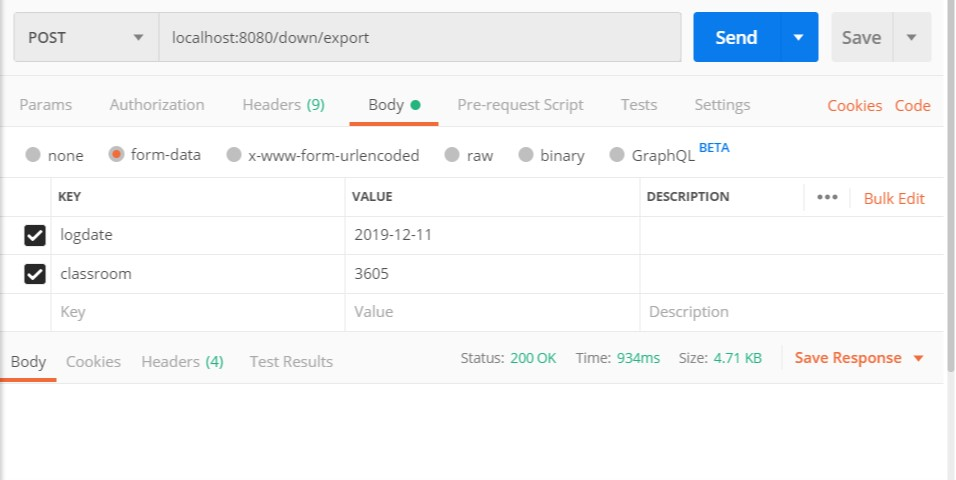
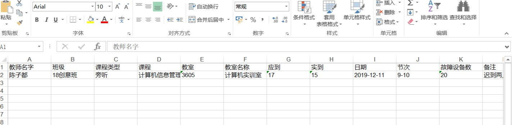

Apache POI 是用Java编写的免费开源的跨平台的 Java API，Apache POI提供API给Java程式对Microsoft Office格式档案读和写的功能。
Apache POI
Apache POI 是创建和维护操作各种符合Office Open XML（OOXML）标准和微软的OLE 2复合文档格式（OLE2）的Java API。用它可以使用Java读取和创建,修改MS Excel文件.而且,还可以使用Java读取和创建MS Word和MSPowerPoint文件。
- HSSF － 提供读写Microsoft Excel XLS格式档案的功能。
- XSSF － 提供读写Microsoft Excel OOXML XLSX格式档案的功能。
- HWPF － 提供读写Microsoft Word DOC格式档案的功能。
- HSLF － 提供读写Microsoft PowerPoint格式档案的功能。
- HDGF － 提供读Microsoft Visio格式档案的功能。
- HPBF － 提供读Microsoft Publisher格式档案的功能。
- HSMF － 提供读Microsoft Outlook格式档案的功能。
在POI中使用HSSF对象时，excel 2003最多只允许存储65536条数据，一般用来处理较少的数据量，这时对于百万级别数据，Excel肯定容纳不了，而且在计算机性能稍低的机器上测试，就很容易导致堆溢出。而当我升级到XSSF对象时，它可以直接支持excel2007以上版本，因为它采用ooxml格式。这时excel可以支持1048576条数据，单个sheet表就支持近104万条数据了,虽然这时导出100万数据能满足要求，但使用XSSF测试后发现偶尔还是会发生堆溢出，所以也不适合百万数据的导出。
pom.xml依赖
1 | <dependency> |
2 | <groupId>org.apache.poi</groupId> |
3 | <artifactId>poi</artifactId> |
4 | <version>3.14</version> |
5 | </dependency> |
6 | <dependency> |
7 | <groupId>org.apache.poi</groupId> |
8 | <artifactId>poi-ooxml</artifactId> |
9 | <version>3.17</version> |
10 | </dependency> |
因为我有点懒，不太想写Service层。
这个项目没有Service层，所以我都写在了controller
controller
1 | package com.example.logSystem.controller; |
2 | import com.example.logSystem.mapper.LogMapper; |
3 | import com.example.logSystem.pojo.Log; |
4 | import org.apache.poi.hssf.usermodel.*; |
5 | import org.springframework.beans.factory.annotation.Autowired; |
6 | import org.springframework.stereotype.Controller; |
7 | import org.springframework.web.bind.annotation.RequestMapping; |
8 | import org.springframework.web.bind.annotation.ResponseBody; |
9 | import org.springframework.web.bind.annotation.RestController; |
10 | |
11 | import javax.servlet.http.HttpServletResponse; |
12 | import java.io.IOException; |
13 | import java.io.OutputStream; |
14 | import java.net.URLEncoder; |
15 | import java.util.Date; |
16 | import java.util.List; |
17 | |
18 | /** |
19 | * 生成数据表 |
20 | */ |
21 | @RestController |
22 | @RequestMapping("/down") |
23 | public class Down { |
24 | |
25 | @Autowired |
26 | // UserService userService; |
27 | LogMapper logMapper; |
28 | |
29 | @RequestMapping("/export") |
30 | public String Export(HttpServletResponse response,String logdate,String classroom) throws IOException { |
31 | |
32 | HSSFWorkbook workbook = new HSSFWorkbook(); // 创建一个Excel文件 |
33 | HSSFSheet sheet = workbook.createSheet("日志表"); // 创建一个Excel的Sheet |
34 | // List<UserDetails> classmateList = userService.getUserDetails(); |
35 | sheet.setDefaultColumnWidth(12); |
36 | System.out.println(logdate+" "+classroom); |
37 | List<Log> logList = logMapper.selectLog(logdate); //查询语句 |
38 | System.out.println("yes"); |
39 | // 设置要导出的文件的名字 |
40 | String fileName = "Log" + new Date() + ".xls"; |
41 | |
42 | // 新增数据行，并且设置单元格数据 |
43 | int rowNum = 1; |
44 | |
45 | // headers表示excel表中第一行的表头 在excel表中添加表头 |
46 | String[] headers= {"教师名字", "班级", "课程类型", "课程" , "教室" , "教室名称" , "应到" , "实到" , "日期" , "节次" , "故障设备数","备注"}; |
47 | HSSFRow row = sheet.createRow(0); // 创建第一行 |
48 | for(int i=0;i<headers.length;i++){ |
49 | HSSFCell cell = row.createCell(i); |
50 | HSSFRichTextString text = new HSSFRichTextString(headers[i]); |
51 | cell.setCellValue(text); |
52 | } |
53 | |
54 | //在表中存放查询到的数据放入对应的列 |
55 | for (Log item : logList) { |
56 | HSSFRow row1 = sheet.createRow(rowNum); |
57 | row1.createCell(0).setCellValue(item.getTeachername()); //教室名称 |
58 | row1.createCell(1).setCellValue(item.getClassname()); |
59 | row1.createCell(2).setCellValue(item.getCoursetype()); |
60 | row1.createCell(3).setCellValue(item.getCoursename()); |
61 | row1.createCell(4).setCellValue(item.getClassroom()); |
62 | row1.createCell(5).setCellValue(item.getClassroomname()); |
63 | row1.createCell(6).setCellValue(item.getFalsenumber()); |
64 | row1.createCell(7).setCellValue(item.getTruenumber()); |
65 | row1.createCell(8).setCellValue(item.getLogdate()); |
66 | row1.createCell(9).setCellValue(item.getSectionnumber()); |
67 | row1.createCell(10).setCellValue(item.getMachine()); |
68 | row1.createCell(11).setCellValue(item.getRemarks()); |
69 | rowNum++; |
70 | } |
71 | |
72 | //设置响应的文件格式为excel,编码格式 |
73 | response.setContentType("application/vnd.ms-excel;charset=utf-8"); |
74 | OutputStream os = response.getOutputStream(); |
75 | // response.setHeader("Content-disposition", "attachment;filename=" + fileName); |
76 | //URLEncoder.encode(fileName,"UTF-8")能适配所有浏览器编码问题，具体的请查看源码 |
77 | response.setHeader("Content-Disposition", "attachment;filename=" |
78 | + URLEncoder.encode(fileName,"UTF-8")); |
79 | response.setCharacterEncoding("utf-8"); |
80 | workbook.write(os); |
81 | os.flush(); |
82 | os.close(); |
83 | return "OK"; |
84 | } |
85 | } |
我的思路是在控制层写一个下载，当前端页面好了，对这这个接口进行post，页面接收到后就会生成一个execl来进行返回，其中数据是通过mybatis自动生成的查询框架来查询的。

利用postman 发送请求

其中如果表头是中文的话可以在编译器中吧编码从gdk改为utf-8，否则string会导致乱码。
以上代码参考(感谢)：
请叫我头头哥